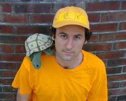

You have
reached the website of
Richard
Harrington's solo show,
Saving the Desert Tortoise
a comedy about environmental consulting
press
photos
upcoming shows
bio
reviews
fun facts
e-mail: harrington dot richard at gmail dot com
“Harrington's humour is impossible to describe. Like the story itself, it seems to be about almost nothing. But just below the surface of his performance and his writing is a vast reservoir of intelligence and skill that is utterly concealed.” – Robert Enright, CBC TV, Canada
"Saving the Desert Tortoise" is a show about watching bulldozers at close range 12 hours a day, 6 days a week in 110 degree weather to make sure they don’t run over any desert tortoises, and about the hotel they (the inspectors, not the bulldozers or the tortoises) all stay in. Watch as the protagonist, recently ejected from the womb of college, unravels in the heat.
Based on the true story of Harrington’s summer of 1991, in which he worked as an environmental inspector on the construction site of a natural gas pipeline in Arizona. Includes tortoise puppetry and some audience interactivity with a plastic crocodile that snaps shut over the patrons’ fingers. It’s frightening, but it doesn’t hurt.
"Saving the Desert Tortoise" played from 2001 to 2003 at the Thunder Bay, Winnipeg, Saskatoon, Swift Current, Victoria and Vancouver Fringe Festivals in Canada, and at Surf Reality, the Kraine Theater and HERE Arts Center in New York City. In the spring of 2002, it was performed at the UNO Festival of Solo performance in Victoria, B.C.
Upcoming performances:
Stay tuned. You never know.
Bio:
Richard Harrington comes from Bolinas, California. He has originated roles in several pieces for the Lincoln Center Theater Director's Lab in New York and has acted in many other independent plays and films in San Francisco and New York. He studied acting at the École Philippe Gaulier in London, with the San Francisco Mime Troupe, with the Saratoga International Theater Institute, and at Williams College. He wrote and directed the short film "The Babies" and co-wrote and co-directed the short film "Waiting for Yanni." Also check out the two-man shows he does with Chris Kauffman at http:www.harringtonkauffman.com.
Reviews:
Edmonton Journal
Edmonton, Alberta
August 2002
Snappy one-man show ponders the power of fate
Acacia Hall, the hottest venue at the Fringe, is a suitable setting for this
hilarious one-man show about a recent college grad whose first job was turtle
herder in the baking Arizona desert.
Richard Harrington, whose deadpan delivery makes this a delight, assures his audience that 85 per cent of what he tells is true. If so, then the summer he spent just outside of Bullhead City, Ariz., almost a dozen years ago was a dandy.
Hired to guard against the possibility that a desert tortoise might be crushed during highway construction, it was Harrington's job to save the critters.
When he joined the crew, he was a callow, self-centred soul pining over a lost love. When he left the crew — fired for sitting down on the job — he was just a little less callow, a little less self-centred and still pining over a lost love, albeit a different one.
Harrington, a New York actor/writer, has an eye for comic detail, whether it's smoking a joint in a hot tub at the Days Inn, hallucinating from some mushrooms on the shores of artificial Lake Havasu or crossing the Colorado River to nearby Laughlin, Nev. to catch a worse-than-indifferent performance from Steppenwolf.
He also understands
just how capricious life can be, and he illustrates the power of chance and
fate with a toy snapping crocodile, whose jaw slams shut when least expected.
It's a neat trick in a neat show. — Marc Horton
Vue Magazine
Edmonton, Alberta
August 2002
From New YOrk City (wherever that is) comes writer/performer Richard Harrington
with a show about his six-week summer gig as a tortoise inspector in the middle
of the Arizona desert. And it's 85 per cent true. Richard is the sweetest guy,
and he's not afraid to share every detail of that summer. He talks about firls,
drugs, panic attacks, Steppenwolf — and he's so polite. He converts all
termperature references to Celsius, has maps for the geographically challenged
andd turns his bottle of orange juice, giving equal time to the French and English
labels. See this show, especially if you think your job sucks. — KL
See Magazine
Edmonton, Alberta
August 2002
Richard Harrington draws you into his tale of a "really fucked up job"
he had 11 years ago. As an environmental inspector, a.k.a. turtle herder, he
was responsible for ensuring that bulldozers didn't run over desert tortoises,
12 hours a day, six days a week in the ridiculously hot sun of western Arizona.
Harrington's deadpan delivery torques up his story's inherent humour, and his
honest recounting of being a 21-year-old discovering the capriciousness of the
plant kingdom, petty tyranny and lovers is altogether endearing. — Thea
Varvis
CBC-TV
Winnipeg, Manitoba
July 2001
Last year Richard Harrington brought his "Hotel California" to the
Fringe and it was sheer delight. This year he has brought a mere portion of
a prequel to that irresistible play, and I find it no less delightful. Don't
expect too close a narrative connection (the character of Gustave Flaubert —
no relation to the novelist — is all you need to know and all he needs
to go). Flaubert works himself into the end of a story about a job Harrington
had in 1991 to save the Desert Tortoise, an endangered species. It's sanity
that seems endangered in this hilarious tale about love and boredom and mushrooms
and malignant cactii and the cauterizing Arizona sun. All these things —
and much more — are woven into a story about three days in the desert
that is flawlessly told. Harrington's humour is impossible to describe. Like
the story itself, it seems to be about almost nothing. But just below the surface
of his performance and his writing is a vast reservoir of intelligence and skill
that is utterly concealed. It's easy to take this show at face value —
it seems merely brilliant and absurdly funny — but that's a desert illusion.
Just like on the Tortoise lookout, he's working all the time. — Robert
Enright
Victoria
Times-Colonist
Victoria, British Columbia
September 2002
(from an article about the Uno solo performance festival)
...New York performer
Richard Harrington presents a wry look at a summer job he once had as an eco-sentry
on an Arizona pipeline construction project. His straight-ahead narrative and
blackboard-style graphics (Canada is shown as a question mark above his crudely
drawn map of the U.S.) stuck on the curtains behind him give the performance
a grade-school charm. Except that the subject matter is more adult.
With his blunt Sgt. Friday delivery, Harrington manages to communicate the searing
boredom of the job -- standing in the sun watching for endangered tortoises
to protect them from the bulldozers -- with an eye for detail that creates a
vivid portrait of a small Arizona town and the pipeline workers Harrington meets.
After-hours rituals such as smoking up, sneaking into a female co-worker's bedroom,
eating at Taco Bell and checking out the hot tub at the Days Inn develop legendary
status through his deadpan delivery. Highlights include painful encounters with
the Teddybear Cholla cactus and a conversation with a talking tortoise.
While he has a very different style from the breathless, high-speed monologues
of TJ Dawe (whose own Uno show is about jobs), Harrington's relaxed, colloquial
soliloquy has its own down-home appeal. — Susan Down
Fun Facts:
(Don't read this part unless you've already seen the show or you don't mind being really confused).
In 1991, the year
this show takes place, Bullhead City elected its first mayor, Mike Love. Bullhead
City also became in that year the host of the Turquoise Circuit Rodeo.
The real name of the casino referred to in the show as the “Riverboat”
is the “Riverside.” The history of the Riverside Hotel and Resort,
which is deeply intertwined with the history of the city of Laughlin, can be
found on the back of every placemat in every bar and restaurant in Bullhead
City. In September 2001, Pat Benatar played at the Riverside.
The blasting of sandstone by the construction company, the preparation and aftermath
of which are described in the show, was always touched off by the same demolition
expert, who had long hair, wore a bandana with a confederate flag on it and
no shirt. Every time, he lit the fuse and then turned and walked slowly back
towards the safe area where the rest of us were all standing. He stopped halfway,
turned around and squatted down to watch the blast. When the slow part of the
fuse hit the Primacord part of the fuse, which burns at thirty kilometers per
second and was connected to all the charges, a 50-meter stretch of hill raised
itself a meter and a half and stayed there. And then the boredom resumed.
The construction site described in the show was due east of Bullhead City, about
halfway down Interstate 40 to Kingman, Arizona, which was the home of Timothy
McVeigh for the few months before he blew up the federal building in Oklahoma
City.
Robert Paxton McCulloch was the head of the McCulloch chainsaw company. The
price he paid for the London Bridge, $2.5 million, was not the high bid, but
the London officials allegedly like the idea that the bridge would be going
from one of the oldest cities in the world, London, to one of the newest, Lake
Havasu.
The character in the show named Darrell is one of the few with no basis in reality,
or very little. I did get a two-bedroom apartment in Flagstaff that fall, but
it was with another member of the tortoise crew, named Jennifer. She was not
the character named Jen in the show, whose real name was something else. The
name of Darrell’s pitbull, Fidel, is actually the real name of the pitbull
owned jointly by my brother and my mother. Fidel is extremely cute. He is white
with black spots, exactly like Petey on the Little Rascals. Fidel’s hair
is so short that when he gets wet, he becomes pink with black spots. Fidel was
procured by my brother’s girlfriend’s roommate (at the time –
now she is my brother’s ex-girlfriend’s ex-roommate). She was admiring
the puppy in a box on the street near her apartment in San Francisco. Its owner,
who bred pitbulls for fighting, told her the dog had a broken leg and that they
were going to use it for practice, but that she could have it for fifty bucks.
When he turned his back, she stole it. She brought it back to the apartment
and then she left for L.A. for three days. When she returned, my brother and
his girlfriend had gotten a cast put on the puppy, named it Fidel, and forbid
the roommate from attempting to take care of it. Somehow, my mom ended up saddled
with Fidel a few months later, but now my brother took him back a few years
later, and only makes my mom take the dog when he goes on vacation.
Gentleman Jim was the real name of a pitbull that I lived with the following
spring in Flagstaff, who was owned by Jennifer’s ex-boyfriend Tom, my
new roommate. We really did spend many an evening sitting around the living
room staring back at the dog, discussing theories of its origin. The namesake
of Tom’s dog was Gentleman Jim Corbett, a boxer born in San Francisco
in 1866. Corbett came from a middle-class family and changed boxing in America
into a respectable sport, inasmuch as it can be considered so today. The bout
in which he took the heavyweight title from John L. Sullivan in 1892 was the
first heavyweight fight in which both participants wore gloves.* During the
five years that Gentleman Jim held the heavyweight title, he performed often
on the stage, and he continued acting well into his retirement.
Last, but not least, I should point out that while the tortoise job itself was
incredibly surreal, the management of the environmental consulting company was
not nearly as fucked up as I make it out to be in this play.
*This was thought to be more civilized at the time, although we know now that
gloves just allow boxers to avoid technical knockouts resulting from heavy bleeding.
They can thereby fight longer matches, thus suffering more brain damage over
the course of their careers.
Top